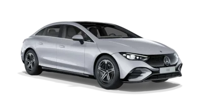
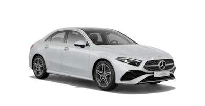
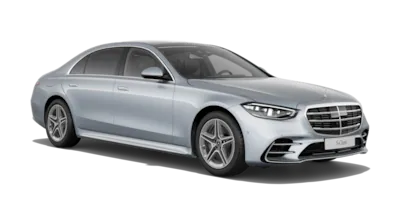
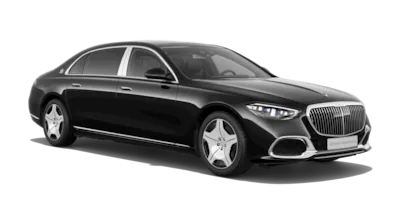

A-SERİSİ SEDAN
A-Serisi Sedan'ın dış mekan tasarımı.
Çarpıcı radyatör ızgarası sahip yeni ön kısımdan düz LED farlara ve zarif sedan arka kısma kadar: A-Serisi Sedan her yerde kendini gösterir.
A-Serisi Sedan'ın iç mekanı.
A-Serisi Sedan'ın içinde her şey sürücü odaklıdır: Burada, daha da geliştirilmiş MBUX multimedya sisteminden konfor koltuklara kadar çok çeşitli bağlantı ve güvenlik yenilikleri, tamamen bireysel sürüş konforu açısından ikna edicidir.
E-SERİSİ SEDAN
E-Serisi Sedan’ın dış tasarımı.
Dinamizmi ilk görüşte hissedin. Güç kubbelerine sahip öne doğru uzatılmış motor kaputu, güçlü led farlar ve modern jant tasarımları E-Serisi Sedan'a çarpıcı bir görünüm kazandırır.
E-Serisi Sedan'ın iç mekanı.
E-Serisi Sedan, günlük hayatınızı iyileştiren her özelliği birleştirir: Zarif malzemeler, üstün teknoloji ve daha fazla konfor. Otomobilinizin kontrol merkezi olan yüksek çözünürlüklü medya ekranı üzerinden rahatça sezgisel şekilde kontrol edebilirsiniz.
S-SERİSİ SEDAN
S-Serisi Sedan’ın dış mekan tasarımı.
Modern estetik ve lüks cömertlik. Mercedes-Benz S-Serisi’nin net tasarımı önemli detaylara odaklanmıştır: Dış mekanda mükemmel orantılar ve iç mekanda zamana uygun lüks. Bu sayede S-Serisi’nin trend belirleyen yenilikleri, vazgeçmek istemeyeceğiniz eşsiz bir görünüme sahip olur.
S-Serisi Sedan’ın iç mekan tasarımı.
S-Serisi Sedan zarif malzemelerden oluşan geniş bir yelpazeyi zarif yüzeylerle birleştirir. Yenilikçi teknoloji ve yüksek çözünürlüklü ekranlar araca modern bir karakter kazandırır. İleri teknolojinin görselleştirilmesi ve kullanımı kolay bir mimariye sahip. Buna bilgi ve eğlence sistemi eklenir.
MAYBACH SEDAN
Mercedes-Maybach S-Serisi’nin dış mekanı.
Üstünlük ve eşsizlik tasarımı belirler. “Maybach” yazılı güçlü krom radyatör ızgarası ve krom süsleme çitalı motor kaputu ile vurgulanır. Aracın çevresinde, ikonik iki tonlu boya seçenekleriyle isteğe bağlı olarak mükemmel bir şekilde tamamlanan diğer birçok krom ayrıntı parlak bir şekilde ortaya çıkar.
Mercedes-Benz S-Serisi’nin iç mekanı.
Özel malzemeler, lüks bir arka bölüm ve yenilikçi teknolojiler en yüksek taleplerinizi karşılar. Elektrikli orta konsol ve MBUX İç Mekan Yardımcısı’ndan ilham alın ve konfor ve eğlence fonksiyonlarını kontrol edin. MBUX yüksek kalite arka eğlence sisteminin keyfini çıkarın veya MBUX arka tablet ile rahatlıkla işlerinizi sürdürün.